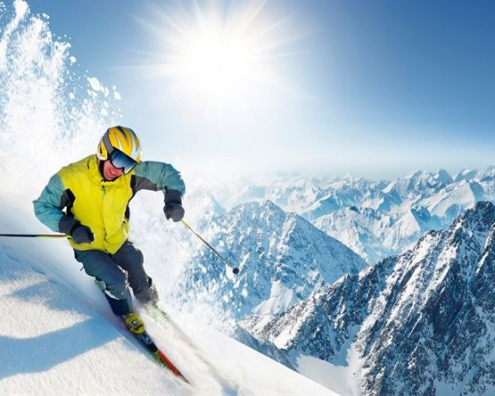
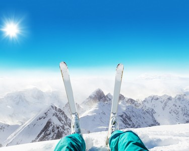
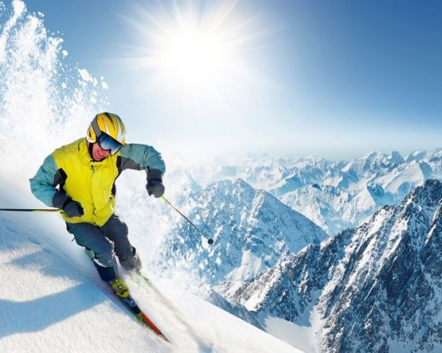
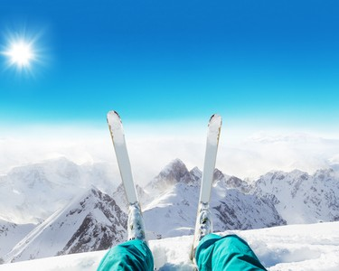

GALERIA DE NIEVE
El invierno transforma la montaña en un escenario único: silencio, aire puro y un paisaje cubierto de blanco que invita a la aventura. Nuestro centro de esquí es el punto de partida para vivir esa experiencia al máximo. Acá, cada paso sobre la nieve es parte del ritual: las antiparras puestas, las tablas al hombro, y ese frío que se siente solo afuera, porque adentro hay emoción, expectativa y ganas de deslizarse. Caminar por la base del cerro es más que un trayecto: es el inicio de un día lleno de desafíos y momentos únicos. Ya sea que vengas a esquiar, hacer snowboard o simplemente disfrutar la vista, este lugar tiene algo especial. La nieve cruje bajo los pies, el sol brilla entre las nubes, y todo parece invitarte a moverte, a explorar, a sentirte parte de la montaña.
 


